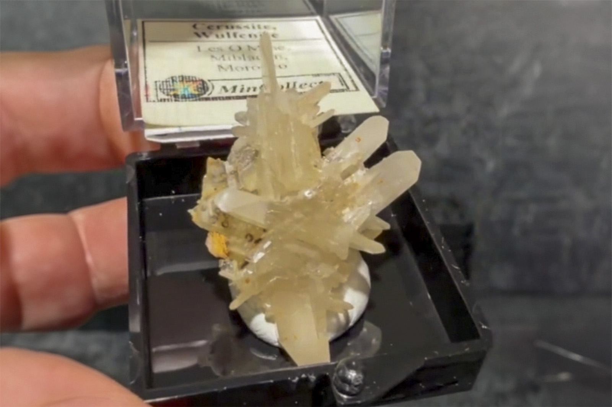

Cerussite
"Cerussite Snowflake TN"
V-10739
Puit 13
Les O Mine, Mibladen, Aït Oufella Caïdat, Midelt Cercle, Midelt Province, Drâa-Tafilalet Region, Morocco
ex M.C. Jensen collection
Purchased 7/11/2026 from MinCollect for $114.28
Core Collection • In Collection
Details
Storage Type: Drawer
Storage Location: C2D1 Small Wonders
Size class: TBD (0)
Dimensions: Unrecorded
Mass: Unrecorded
Luster: Unrecorded